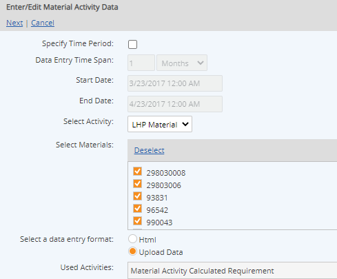
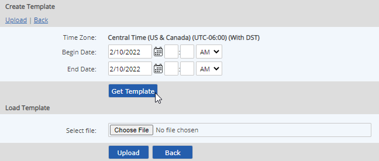
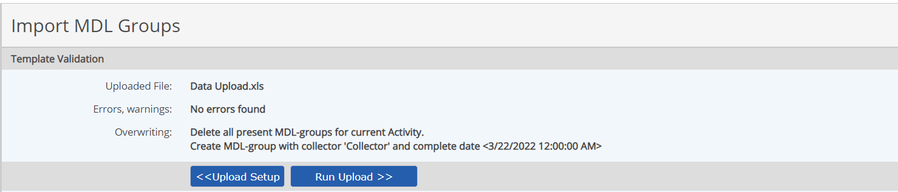
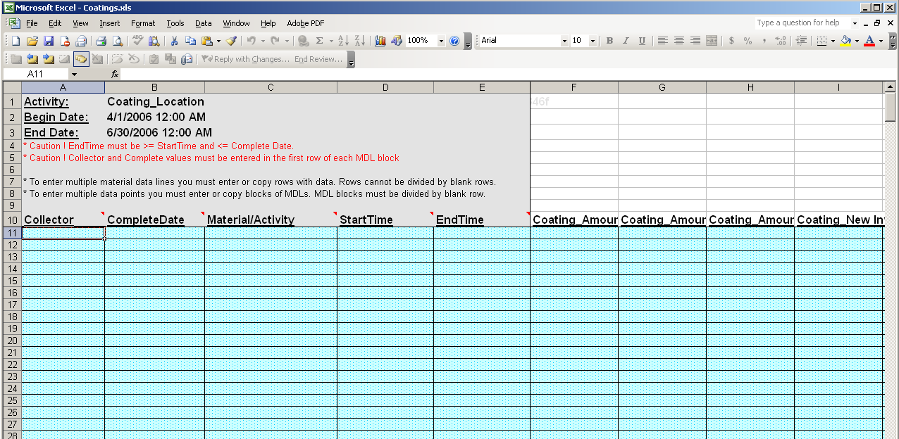
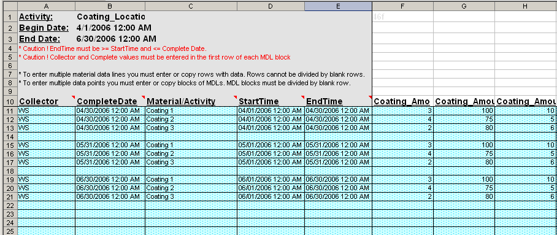
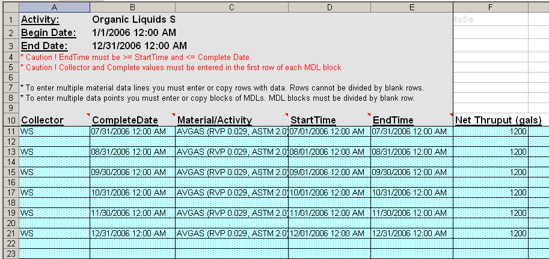

To upload data for Material Activity calculations via Excel, you must first generate an Excel template from the system, choosing the parent object to enter data for and the materials and activity to be used. Instructions for generating an Excel template are given below.
To complete the template, you should understand the concept of material data lines and material batches. See Material Data Lines and Data Batches for more information. Instructions for completing the template are given below.
To enter data for Material Activity calcs via Excel:
Select the parent object for the Material Activity Calculated Requirements.
Right click and choose Data > Enter/Edit.
If the parent object contains both numeric parameters and Material Activity calculations, select Material Activity for the data type. This step is skipped if there are no parameters at the same location.
On the next page, select the Activity and the Materials to be used in the data entry.
Select the Activity, if necessary, from the list. (In most cases, there will only be one.)
Select the Materials to be used in the data entry.
In "Select a data entry format" select Upload Data, then select Next.

If you already have an Excel template that you have completed, you can upload the file now, in the Load Template section. If you do not have an Excel template yet, you can generate one in the Create Template section.
To generate an Excel template to complete:
Select the date range for which you want to enter data. Begin Date and End Date will be inclusive. Select Get Template and save the file locally.

See below for instructions on completing the template.
To upload data in an Excel template:
From the initial data entry screen, choose the Upload Data button, then select Next.
Select Choose File and browse to find the Excel data file from your local folders.
It is not necessary to choose dates for the date fields above, as the dates are defined in the Excel file to be uploaded.
Select Upload.
The file is validated for proper content before it is uploaded to the system. A message appears informing you if the file is valid. Any problems are noted. Click Upload Setup to return. Then correct the problems before attempting to upload the file again.

If no errors were found, click Run Upload to continue.
A confirmation message informs you that the data transaction was successfully added to the queue.
You can check the status of a command by clicking View Commands. Completed transactions have the status Succeeded. Transactions still in process may be Processing or Waiting. Failed commands should be reported to your administrator. Data from a failed transaction is not saved and will need to be resubmitted once the problem is resolved.
Click Back to Manager to return to the previous view mode.
Completing the Excel template:

The Begin and End Dates shown at the top of the sheet are the Begin and End Dates for the data entry template, chosen at the time the Excel template is generated. The Complete Date, StartTime and EndTime for each material data line must be within the given Begin/End Dates at the top of the sheet.
To group data entries for a data batch: Use the same Complete Date for all data rows that are to be treated as a batch and keep data rows consecutive. StartTime and EndTime may be different for each line, but the Complete Date must be the same. All consecutive rows are treated as one material data batch for the purposes of calculation. Aggregations will be performed across all data in a batch, with one data point created for each Material Activity calculation with the same material and activity.
The sample Excel data upload file shown below contains data entered for 3 distinct months with 3 material data lines per batch. Each set of monthly data has the same Complete Date on the last day of the month, and contains one row for each material. When uploaded to the system, the data will result in three data points, one for each month, for each Material Activity Requirement under the location.

To create multiple data batches: Leave a blank row between data batches. Different batches must have a unique date/time for the Complete Date and be separated by a blank row.
The sample Excel data upload file shown below contains six data rows, one for each of six months, with a single material data line for each. When uploaded to the system, the data will result in six calculated data points, one for each month, for each Material Activity Requirement under the location.

Complete Date is the date/time at which the data point will be stored.
Start Time and End Time is the date range for the material data line. End Time must be >= Start Time.